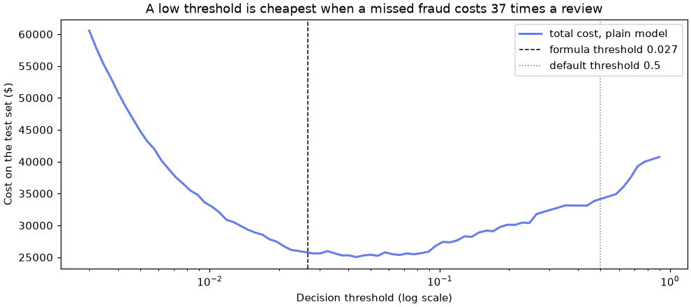

⚖️ Lesson 2.5: Imbalanced Classes
When the thing you care about happens less than once in a hundred rows, learn to measure it honestly, compare the standard fixes, and set the decision threshold by what mistakes actually cost.
🎯 Learning Objectives
By the end of this lesson, you will be able to:
- Explain why accuracy fails on rare classes and judge a model with recall, precision and average precision against the right baseline
- Apply
class_weight="balanced"and the imbalanced-learn samplers (random under- and oversampling, SMOTE) inside a leak-proof pipeline - Show that weights and resampling mostly move the decision threshold, and explain what they do to predicted probabilities
- Choose a threshold from the cost of each kind of mistake, by formula and with
TunedThresholdClassifierCV - Check who carries the burden of false alarms before a model goes live
In This Lesson
🔍 Needles in a Haystack
Pinecrest Outfitters takes thousands of online payments a week. A few of them are fraud: a stolen card buying gift cards at 3 a.m., a brand-new account shipping a tent to a different address. Every fraud that slips through costs Pinecrest the goods plus a chargeback fee. Every honest order that gets held for review costs an analyst's time and an annoyed customer. The fraud team wants a model that sends the right orders to a human reviewer.
The churn data you have used so far had one churner in six. Fraud is far rarer. Load the six months of payments and look:
import numpy as np
import pandas as pd
tx = pd.read_csv("data/transactions.csv")
print(tx.shape)
print(tx["is_fraud"].value_counts())
print(f"fraud rate: {tx['is_fraud'].mean():.3%}")Output
(50000, 13)
is_fraud
0 49562
1 438
Name: count, dtype: int64
fraud rate: 0.876%438 frauds in 50,000 payments: fewer than one in a hundred. This is an imbalanced classification problem. The rare class (here fraud) is called the minority or positive class, and it is almost always the one you care about.
💡 Mental Model: The Smoke Detector
A smoke detector that never beeps is right on 364 days a year. It is also worthless. A detector that beeps every time you make toast catches every fire, and soon gets its battery pulled out. A useful detector sits between the two, and where exactly depends on what a false alarm costs compared with a missed fire. Every idea in this lesson is about finding that spot on purpose instead of by accident.
Split the data the way Lesson 1.2 taught for classification: stratified, so that both sides get their share of the rare class. With only 438 frauds, an unstratified split could leave the test set noticeably short of them. (These payments are ordered in time. The teaching sections use a random split to keep the focus on imbalance; the project splits by date, as a real fraud team must.)
from sklearn.model_selection import train_test_split
from sklearn.dummy import DummyClassifier
from sklearn.metrics import recall_score
num_cols = ["account_age_days", "amount", "hour", "items", "device_new",
"billing_shipping_mismatch", "country_mismatch", "card_attempts", "velocity_24h"]
cat_cols = ["category"]
X = tx[num_cols + cat_cols]
y = tx["is_fraud"]
X_train, X_test, y_train, y_test = train_test_split(
X, y, test_size=0.3, stratify=y, random_state=42
)
print(f"train: {len(y_train):,} rows, {y_train.sum()} frauds")
print(f"test : {len(y_test):,} rows, {y_test.sum()} frauds")
dummy = DummyClassifier(strategy="most_frequent").fit(X_train, y_train)
print(f"'all legitimate' accuracy: {dummy.score(X_test, y_test):.4f}")
print(f"frauds caught: {recall_score(y_test, dummy.predict(X_test)):.0%}")Output
train: 35,000 rows, 307 frauds
test : 15,000 rows, 131 frauds
'all legitimate' accuracy: 0.9913
frauds caught: 0%Declaring every payment legitimate scores 99.1% accuracy and catches nothing. This is the accuracy paradox: when one class is rare, accuracy is dominated by the common class and says almost nothing about the rare one. Any model you build has to be judged on how it handles the 131 test frauds, not the 14,869 honest payments.
📏 Measure What Matters
Lesson 1.4 gave you the vocabulary. As a reminder, for the fraud class:
- Recall: of the real frauds, the share the model flags. "How many fires did the detector catch?"
- Precision: of the flagged payments, the share that really are fraud. "How many beeps were real fires?"
- Average precision (AP): the area under the precision-recall curve, a summary of the ranking over every possible threshold. A random ranking scores the fraud rate, about 0.009, so that is AP's baseline, not 0.5.
- ROC AUC: the chance that a random fraud is ranked above a random honest payment. It stays readable under imbalance, but it can look flattering, because it rewards pushing thousands of easy honest payments to the bottom.
Now train a plain logistic regression in a pipeline, exactly as Lesson 2.2 taught: scale the numbers, one-hot encode the category. Because several models in this lesson need the same preprocessing, a small function builds a fresh copy each time (sharing one fitted ColumnTransformer object between pipelines would let one pipeline's fit silently overwrite another's).
from sklearn.compose import ColumnTransformer
from sklearn.preprocessing import StandardScaler, OneHotEncoder
from sklearn.pipeline import make_pipeline
from sklearn.linear_model import LogisticRegression
from sklearn.metrics import roc_auc_score, average_precision_score
def make_preprocess():
return ColumnTransformer([
("num", StandardScaler(), num_cols),
("cat", OneHotEncoder(handle_unknown="ignore"), cat_cols),
])
plain = make_pipeline(make_preprocess(), LogisticRegression())
plain.fit(X_train, y_train)
p_plain = plain.predict_proba(X_test)[:, 1]
print(f"ROC AUC {roc_auc_score(y_test, p_plain):.3f} average precision {average_precision_score(y_test, p_plain):.3f}")
print(f"average precision of a random ranking: {y_test.mean():.4f}")Output
ROC AUC 0.843 average precision 0.463
average precision of a random ranking: 0.0087An AP of 0.46 against a random 0.009 means the ranking is genuinely good: payments the model scores high really are fraud far more often. Now see what the default decisions look like. A small helper prints the counts that a fraud team cares about:
from sklearn.metrics import confusion_matrix
def report(name, y_true, y_pred):
tn, fp, fn, tp = confusion_matrix(y_true, y_pred, labels=[0, 1]).ravel()
print(f"{name:16s} flagged {tp + fp:5d} caught {tp:3d} missed {fn:3d} "
f"recall {tp / (tp + fn):.2f} precision {tp / max(tp + fp, 1):.2f}")
report("plain @ 0.5", y_test, plain.predict(X_test))Output
plain @ 0.5 flagged 44 caught 41 missed 90 recall 0.31 precision 0.93At the default cut-off of 0.5, the model flags only 44 payments. Almost all of them are fraud (precision 0.93), but it misses 90 of the 131 frauds. The ranking is good; the decision rule is timid. That distinction, between how well a model ranks and where you cut the ranking, is the key to this whole lesson.
💡 Why 0.5 Is the Wrong Cut-off Here
predict says "fraud" only when the model believes fraud is more likely than not. With a base rate under 1%, very few payments ever look more-likely-than-not fraudulent, even suspicious ones. A payment with a 20% chance of being fraud is still very much worth a $10 review. The 0.5 rule is only right when both kinds of mistake cost the same, and here they do not.
🏋️ Class Weights
The first standard fix changes the training itself. Logistic regression learns by adding up a penalty for every training row it gets wrong. With class_weight, a mistake on a fraud row counts more than a mistake on an honest row. The setting "balanced" chooses the weights so that both classes contribute equally in total: each class gets n_samples / (n_classes * n_in_class).
from sklearn.utils.class_weight import compute_class_weight
print(compute_class_weight("balanced", classes=np.array([0, 1]), y=y_train).round(2))
weighted = make_pipeline(make_preprocess(), LogisticRegression(class_weight="balanced"))
weighted.fit(X_train, y_train)
p_weighted = weighted.predict_proba(X_test)[:, 1]
print(f"ROC AUC {roc_auc_score(y_test, p_weighted):.3f} average precision {average_precision_score(y_test, p_weighted):.3f}")
report("balanced @ 0.5", y_test, weighted.predict(X_test))Output
[ 0.5 57. ]
ROC AUC 0.848 average precision 0.438
balanced @ 0.5 flagged 1863 caught 90 missed 41 recall 0.69 precision 0.05Each training fraud now counts about 57 times, each honest payment about half. Recall jumps from 0.31 to 0.69. But look at the price: 1,863 payments flagged to catch 90 frauds, a precision of 0.05. And look at the ranking metrics: ROC AUC and AP barely moved (AP even dropped a little). The weighted model does not rank payments much better. It mostly says "fraud" more readily.
There is a second, quieter side effect. Compare the average predicted probability with the real fraud rate:
from scipy.stats import spearmanr
print(f"real fraud rate : {y_test.mean():.4f}")
print(f"mean probability, plain : {p_plain.mean():.4f}")
print(f"mean probability, weighted: {p_weighted.mean():.4f}")
print(f"rank correlation of the two scores: {spearmanr(p_plain, p_weighted).statistic:.3f}")Output
real fraud rate : 0.0087
mean probability, plain : 0.0085
mean probability, weighted: 0.2671
rank correlation of the two scores: 0.961The plain model's probabilities average out to the real rate: it is calibrated, so "0.2" means roughly a one-in-five chance. The weighted model's probabilities average 0.27 when the truth is 0.009. They still rank payments almost the same way (rank correlation 0.96), but they are no longer probabilities of anything real. Hold on to that; it matters when you pick a threshold.
✅ When Weights Help
Weights are free (no extra rows, no extra time) and many estimators accept them: LogisticRegression, SVC, the decision trees and forests, and HistGradientBoostingClassifier all take class_weight. For flexible models such as boosted trees, weighting can genuinely change what the model learns, not only where it cuts. Treat it as one candidate to compare, judged on AP and on your cost, never on its default recall.
🔁 Resampling with imbalanced-learn
The second family of fixes changes the training data instead of the training rule. The imbalanced-learn library (imported as imblearn, installed with the course requirements) provides samplers. A sampler has fit_resample(X, y), which returns a new, rebalanced training set:
RandomUnderSamplerthrows away honest rows at random until the classes are equal. Fast, but it discards most of your data.RandomOverSamplerrepeats fraud rows at random until the classes are equal. Nothing is lost, but the model sees the same 307 frauds over and over.SMOTE(Synthetic Minority Over-sampling Technique) invents new fraud rows: it picks a fraud, picks one of its nearest fraud neighbors, and places a synthetic row at a random point on the line between them.
See what each sampler does to the training rows. Samplers need numbers, so encode first (this is just to look at the counts; the right way to combine them with a model comes next):
from imblearn.under_sampling import RandomUnderSampler
from imblearn.over_sampling import RandomOverSampler, SMOTE
X_train_enc = make_preprocess().fit_transform(X_train)
for sampler in [RandomUnderSampler(random_state=42), RandomOverSampler(random_state=42), SMOTE(random_state=42)]:
X_res, y_res = sampler.fit_resample(X_train_enc, y_train)
print(f"{type(sampler).__name__:18s} rows {len(y_res):6,} fraud {y_res.sum():6,} honest {(y_res == 0).sum():6,}")Output
RandomUnderSampler rows 614 fraud 307 honest 307
RandomOverSampler rows 69,386 fraud 34,693 honest 34,693
SMOTE rows 69,386 fraud 34,693 honest 34,693Undersampling trains on just 614 rows; oversampling and SMOTE on almost 70,000. Samplers carry random_state=42 because they choose rows at random.
🧱 Samplers Belong Inside an imblearn Pipeline
Resampling must only ever touch training data. The test set, and each validation fold during cross-validation, must keep the real class balance, because that is what the model will meet in production. imbalanced-learn ships its own Pipeline (and make_pipeline) that knows the difference: a sampler step runs during fit and is skipped during predict, predict_proba and score. A scikit-learn Pipeline does not accept samplers at all (you will see the error in Common Mistakes).
from imblearn.pipeline import make_pipeline as make_imb_pipeline
samplers = {
"undersample": RandomUnderSampler(random_state=42),
"oversample": RandomOverSampler(random_state=42),
"SMOTE": SMOTE(random_state=42),
}
for name, sampler in samplers.items():
pipe = make_imb_pipeline(make_preprocess(), sampler, LogisticRegression())
pipe.fit(X_train, y_train)
proba = pipe.predict_proba(X_test)[:, 1]
print(f"{name:12s} ROC AUC {roc_auc_score(y_test, proba):.3f} AP {average_precision_score(y_test, proba):.3f}")
report(f"{name} @ 0.5", y_test, pipe.predict(X_test))Output
undersample ROC AUC 0.843 AP 0.419
undersample @ 0.5 flagged 2172 caught 93 missed 38 recall 0.71 precision 0.04
oversample ROC AUC 0.848 AP 0.437
oversample @ 0.5 flagged 1866 caught 90 missed 41 recall 0.69 precision 0.05
SMOTE ROC AUC 0.845 AP 0.428
SMOTE @ 0.5 flagged 1940 caught 89 missed 42 recall 0.68 precision 0.05Put everything side by side:
| Model (logistic regression) | ROC AUC | AP | Flagged at 0.5 | Recall | Precision |
|---|---|---|---|---|---|
| Plain | 0.843 | 0.463 | 44 | 0.31 | 0.93 |
class_weight="balanced" | 0.848 | 0.438 | 1,863 | 0.69 | 0.05 |
| Random undersampling | 0.843 | 0.419 | 2,172 | 0.71 | 0.04 |
| Random oversampling | 0.848 | 0.437 | 1,866 | 0.69 | 0.05 |
| SMOTE | 0.845 | 0.428 | 1,940 | 0.68 | 0.05 |
The pattern is striking. Four different "fixes" all land in the same place: about 1,900 flags, recall near 0.7, precision near 0.05. Their ranking quality (AUC, AP) is the same as the plain model's or slightly worse. For a linear model on this data, weighting and every resampler do essentially one thing: they shift the scores so that more payments cross 0.5. You can get that effect directly, without inflating the training set or distorting the probabilities, by moving the threshold.
⚠️ SMOTE Is Not Magic
SMOTE was designed for numeric features where "a point between two frauds" is plausible. Here it interpolates one-hot columns too, creating rows that are 0.6 "Gift Cards" and 0.4 "Tents", which no real payment is. (imbalanced-learn's SMOTENC handles mixed numeric and categorical data.) More importantly, synthetic rows add no new information: they are guesses built from the frauds you already have. On many real tabular problems, SMOTE does no better than class weights or threshold tuning. Try it; do not assume it.
🎚️ Moving the Threshold
Go back to the plain model with its good ranking and honest probabilities, and ask the business question directly. Pinecrest's fraud team estimates that reviewing one flagged payment costs $10 of analyst time, and that a fraud that gets through costs about $375 on average (the goods plus a chargeback fee). A review that catches a fraud stops the loss, so the total cost of any set of decisions is:
cost = $10 × (payments flagged) + $375 × (frauds missed)
REVIEW_COST, FRAUD_LOSS = 10, 375
def fraud_cost(y_true, y_pred):
tn, fp, fn, tp = confusion_matrix(y_true, y_pred, labels=[0, 1]).ravel()
return int(REVIEW_COST * (tp + fp) + FRAUD_LOSS * fn)
print(f"review nothing : ${fraud_cost(y_test, np.zeros(len(y_test), dtype=int)):,}")
print(f"review everything: ${fraud_cost(y_test, np.ones(len(y_test), dtype=int)):,}")
for threshold in [0.5, 0.2, 0.1, 0.05, 0.02, 0.01]:
pred = (p_plain >= threshold).astype(int)
print(f"threshold {threshold:<5} cost ${fraud_cost(y_test, pred):,}")Output
review nothing : $49,125
review everything: $150,000
threshold 0.5 cost $34,190
threshold 0.2 cost $30,100
threshold 0.1 cost $27,455
threshold 0.05 cost $25,395
threshold 0.02 cost $27,250
threshold 0.01 cost $33,230Both "do nothing" options are expensive, and so is the default threshold. Lowering the cut-off from 0.5 to 0.05 saves almost $9,000 on these 15,000 payments, with the same model. Below that, the extra reviews start to cost more than the frauds they catch.
📐 The Threshold Formula
If the probabilities are calibrated, you can work out the best cut-off on paper. Flag a payment when the expected loss from letting it through is bigger than the cost of reviewing it:
flag when p × $375 > $10, that is, when p > 10 / 375 ≈ 0.027
In general, the cost-minimizing threshold is review cost / loss from a miss (when a review costs the same whether or not it finds fraud, as here). The chart shows the cost curve on the test set with this formula's threshold marked:
import matplotlib.pyplot as plt
thresholds = np.geomspace(0.003, 0.9, 80)
costs = [fraud_cost(y_test, (p_plain >= t).astype(int)) for t in thresholds]
fig, ax = plt.subplots(figsize=(9, 4), layout="constrained")
ax.plot(thresholds, costs, color="#667eea", linewidth=2, label="total cost, plain model")
ax.axvline(REVIEW_COST / FRAUD_LOSS, color="black", linestyle="--", linewidth=1,
label=f"formula threshold {REVIEW_COST / FRAUD_LOSS:.3f}")
ax.axvline(0.5, color="gray", linestyle=":", linewidth=1, label="default threshold 0.5")
ax.set_xscale("log")
ax.set_xlabel("Decision threshold (log scale)")
ax.set_ylabel("Cost on the test set ($)")
ax.set_title("A low threshold is cheapest when a missed fraud costs 37 times a review")
ax.legend()
plt.show()
best = thresholds[int(np.argmin(costs))]
print(f"cheapest threshold on the test set: {best:.3f} (cost ${min(costs):,})")Output
cheapest threshold on the test set: 0.043 (cost $25,025)
The formula works because the plain model's probabilities are honest. Peeking at the test set to find the cheapest point, as the last line did, is fine for drawing a picture but not for choosing: a threshold picked on the test set is fitted to the test set. The proper tool picks it with cross-validation on the training data.
🤖 TunedThresholdClassifierCV
scikit-learn's TunedThresholdClassifierCV wraps any classifier. It runs cross-validation on the training data, tries many thresholds on each validation fold, keeps the one with the best average score, and then refits the model on all the training data. Give it your cost as a scorer (greater_is_better=False because lower cost is better):
from sklearn.metrics import make_scorer
from sklearn.model_selection import TunedThresholdClassifierCV
cost_scorer = make_scorer(fraud_cost, greater_is_better=False)
tuned = TunedThresholdClassifierCV(
make_pipeline(make_preprocess(), LogisticRegression()),
scoring=cost_scorer,
cv=5,
)
tuned.fit(X_train, y_train)
print(f"threshold chosen by 5-fold CV: {tuned.best_threshold_:.3f}")
print(f"test cost: ${fraud_cost(y_test, tuned.predict(X_test)):,}")
report("tuned threshold", y_test, tuned.predict(X_test))Output
threshold chosen by 5-fold CV: 0.040
test cost: $25,295
tuned threshold flagged 392 caught 74 missed 57 recall 0.56 precision 0.19Cross-validation chose a threshold near 0.04, close to the formula's 0.027 and well inside the cheap valley, without ever looking at the test set. The tuned model flags 392 payments, catches 74 of the 131 frauds, and costs $25,295, against $34,190 for the default threshold. The class-weighted model at its default cut-off flagged 1,863 payments and would have cost $34,005. tuned.predict applies the new threshold automatically; tuned.predict_proba still returns the plain model's calibrated probabilities.
💡 Choosing a Different Target
Cost is not the only sensible objective. If the fraud team can review at most 100 payments a day, you would pick the threshold that fills that queue. If regulations demand catching at least 60% of fraud, you would pick the highest threshold whose recall reaches 0.6. TunedThresholdClassifierCV accepts any scorer (for example scoring="f1" or "balanced_accuracy", its default), and FixedThresholdClassifier applies a threshold you chose yourself.
🗺️ A Strategy for Rare Classes
Put the pieces together and you get a workflow that holds up on most imbalanced problems:
- Separate ranking from deciding. First ask "does the model put frauds near the top?" (AP, compared with the base rate). Then ask "where should we cut?" (cost, capacity or a recall target).
- Improve the ranking with information, not with rebalancing. Better features (Lesson 2.3) and more flexible models (Module 5) raise AP; on this data, tuned gradient boosting reaches an AP around 0.5 because it can combine signals such as "night hours on a new device".
- Treat weights and samplers as candidates, compared by cross-validated AP or cost inside an imblearn pipeline. Keep them only when they win.
- Set the threshold last, with
TunedThresholdClassifierCVor the cost formula on calibrated probabilities.
⚠️ Who Pays for a False Alarm?
Every flagged honest payment is a real customer whose order is delayed and who may be asked to prove who they are. If the model's false alarms fall much more often on one group (new customers, customers in one region, people who shop at night because they work night shifts), that group carries the cost of everyone's fraud protection. Before a fraud model goes live, compare the false-alarm rate across the groups you can see (Exercise 3 does this for new accounts), prefer human review over automatic blocking, and never use protected attributes such as age, race or religion as model inputs. Payment data is also sensitive personal data: keep it access-controlled and keep only the columns the model needs.
⚠️ Common Mistakes
Imbalanced problems produce few error messages and many silently wrong numbers. These are the traps that catch most people.
1. A Sampler in a scikit-learn Pipeline
from sklearn.pipeline import make_pipeline as make_sk_pipeline
make_sk_pipeline(make_preprocess(), SMOTE(random_state=42), LogisticRegression()).fit(X_train, y_train)Error
TypeError: All intermediate steps should be transformers and implement fit and transform or be the string 'passthrough' 'SMOTE(random_state=42)' (type <class 'imblearn.over_sampling._smote.base.SMOTE'>) doesn'tWhat it means: a scikit-learn pipeline only knows transformers (fit plus transform); a sampler has fit_resample instead. (The message really does stop at "doesn't".) Fix: build the pipeline with imblearn.pipeline.Pipeline or imblearn.pipeline.make_pipeline. It accepts every scikit-learn step too, so you lose nothing.
2. Resampling Before Cross-Validation
from sklearn.model_selection import StratifiedKFold, cross_val_score
cv = StratifiedKFold(n_splits=5, shuffle=True, random_state=42)
X_smote, y_smote = SMOTE(random_state=42).fit_resample(X_train_enc, y_train)
leaky = cross_val_score(LogisticRegression(), X_smote, y_smote, cv=cv, scoring="average_precision")
honest = cross_val_score(make_imb_pipeline(make_preprocess(), SMOTE(random_state=42), LogisticRegression()),
X_train, y_train, cv=cv, scoring="average_precision")
print(f"SMOTE first, then CV : AP {leaky.mean():.3f}")
print(f"SMOTE inside the CV : AP {honest.mean():.3f}")Output (no error, and that is the problem)
SMOTE first, then CV : AP 0.912
SMOTE inside the CV : AP 0.495What happened: SMOTE ran on all the training rows first, so the validation folds were half synthetic frauds, each built from real frauds that sit in the training folds. The model is graded on near-copies of its own homework, and on a 50/50 class balance it will never meet in production. AP 0.91 is pure fiction; the honest figure is about 0.49. (The encoder was also fitted on all rows, a smaller leak of the same kind.) Fix: put the sampler inside an imblearn pipeline and cross-validate the whole pipeline, so each fold resamples only its own training part.
3. Treating Weighted Probabilities as Real Probabilities
formula_threshold = REVIEW_COST / FRAUD_LOSS
pred = (p_weighted >= formula_threshold).astype(int)
print(f"flagged {pred.sum():,} of {len(pred):,} cost ${fraud_cost(y_test, pred):,}")Output (no error, and that is the problem)
flagged 15,000 of 15,000 cost $150,000What happened: the threshold formula assumes calibrated probabilities. The class-weighted model's scores are inflated (they average 0.27 for a 0.009 base rate), so every single payment clears 0.027 and the "optimal" rule reviews everything, the most expensive option of all. Resampled models have the same problem. Fix: use the formula only on an unweighted, unresampled model, or tune the threshold with TunedThresholdClassifierCV, which works on any score. If you need real probabilities from a weighted model, recalibrate it with CalibratedClassifierCV.
4. Cross-Validating with the Default Score
for name, estimator in [("all legitimate", DummyClassifier(strategy="most_frequent")),
("plain model", make_pipeline(make_preprocess(), LogisticRegression()))]:
scores = cross_val_score(estimator, X_train, y_train, cv=cv)
print(f"{name:15s} mean CV score {scores.mean():.4f}")Output (no error, and that is the problem)
all legitimate mean CV score 0.9912
plain model mean CV score 0.9941What happened: without scoring=, cross_val_score (and GridSearchCV) use the estimator's score method, which is accuracy for classifiers. A model that catches 30% of fraud and a model that catches none differ in the third decimal. Tuning on this number would pick models almost at random. Fix: always pass scoring="average_precision", "recall" or your own cost scorer on imbalanced data.
5. Resampling Raw Text Columns
SMOTE(random_state=42).fit_resample(X_train, y_train)Error
ValueError: could not convert string to float: 'Snow'What it means: SMOTE computes distances and interpolates, so every column must be a number; category still holds text such as "Snow". Fix: put the sampler after the preprocessing step in an imblearn pipeline (as in this lesson), or use SMOTENC, which is told which columns are categorical.
🛠️ Project: A Fraud Review Queue for June
In production, a fraud model is trained on the past and used on the future. Your task: train on January to May, choose a model and a threshold using only those months, then run it once on June and report what the review queue would have cost and caught. Work in a fresh notebook called lesson_2_5_project. Allow about 40 minutes.
🛠️ Step 1: Load and split by date (5 min)
The rows are sorted by timestamp. Everything before June 1 is training data; June is the test month. No shuffling: the future must not leak into the past.
import numpy as np
import pandas as pd
tx = pd.read_csv("data/transactions.csv")
num_cols = ["account_age_days", "amount", "hour", "items", "device_new",
"billing_shipping_mismatch", "country_mismatch", "card_attempts", "velocity_24h"]
cat_cols = ["category"]
is_june = tx["timestamp"] >= "2025-06-01"
train, test = tx[~is_june], tx[is_june]
X_train, y_train = train[num_cols + cat_cols], train["is_fraud"]
X_test, y_test = test[num_cols + cat_cols], test["is_fraud"]
print(f"train Jan-May: {len(train):,} payments, {y_train.sum()} frauds ({y_train.mean():.2%})")
print(f"test June : {len(test):,} payments, {y_test.sum()} frauds ({y_test.mean():.2%})")Output
train Jan-May: 41,738 payments, 374 frauds (0.90%)
test June : 8,262 payments, 64 frauds (0.77%)June's fraud rate is a little lower than the training months'. Rates drift in real life too; a threshold chosen on cost rather than on a fixed rate copes with that better.
🛠️ Step 2: Define the cost and the do-nothing baselines (5 min)
from sklearn.metrics import confusion_matrix
REVIEW_COST, FRAUD_LOSS = 10, 375
def fraud_cost(y_true, y_pred):
tn, fp, fn, tp = confusion_matrix(y_true, y_pred, labels=[0, 1]).ravel()
return int(REVIEW_COST * (tp + fp) + FRAUD_LOSS * fn)
cost_nothing = fraud_cost(y_test, np.zeros(len(y_test), dtype=int))
cost_everything = fraud_cost(y_test, np.ones(len(y_test), dtype=int))
print(f"June, review nothing : ${cost_nothing:,}")
print(f"June, review everything: ${cost_everything:,}")Output
June, review nothing : $24,000
June, review everything: $82,620Any model has to beat the cheaper of these, $24,000, or it is not worth running.
🛠️ Step 3: Compare three candidates by cross-validated AP (10 min)
Compare the plain, class-weighted and SMOTE versions with 5-fold stratified cross-validation on the training months only. AP judges the ranking, which is what the threshold step will build on.
from sklearn.compose import ColumnTransformer
from sklearn.preprocessing import StandardScaler, OneHotEncoder
from sklearn.linear_model import LogisticRegression
from sklearn.model_selection import StratifiedKFold, cross_val_score
from imblearn.pipeline import make_pipeline
from imblearn.over_sampling import SMOTE
def make_preprocess():
return ColumnTransformer([
("num", StandardScaler(), num_cols),
("cat", OneHotEncoder(handle_unknown="ignore"), cat_cols),
])
candidates = {
"plain": make_pipeline(make_preprocess(), LogisticRegression()),
"balanced weights": make_pipeline(make_preprocess(), LogisticRegression(class_weight="balanced")),
"SMOTE": make_pipeline(make_preprocess(), SMOTE(random_state=42), LogisticRegression()),
}
cv = StratifiedKFold(n_splits=5, shuffle=True, random_state=42)
for name, pipe in candidates.items():
scores = cross_val_score(pipe, X_train, y_train, cv=cv, scoring="average_precision")
print(f"{name:17s} AP {scores.mean():.3f} +/- {scores.std():.3f}")Output
plain AP 0.506 +/- 0.054
balanced weights AP 0.481 +/- 0.050
SMOTE AP 0.472 +/- 0.049The plain model ranks best, and its probabilities stay calibrated. Keep it. The imblearn make_pipeline works for all three, which is why this notebook imports it instead of scikit-learn's.
🛠️ Step 4: Tune the threshold on the training months (5 min)
from sklearn.metrics import make_scorer
from sklearn.model_selection import TunedThresholdClassifierCV
queue_model = TunedThresholdClassifierCV(
candidates["plain"],
scoring=make_scorer(fraud_cost, greater_is_better=False),
cv=cv,
)
queue_model.fit(X_train, y_train)
print(f"threshold: {queue_model.best_threshold_:.3f} (formula: {REVIEW_COST / FRAUD_LOSS:.3f})")Output
threshold: 0.051 (formula: 0.027)Cross-validation picked a threshold about twice the formula's. Both sit in the same broad, flat valley of the cost curve you drew earlier, where thresholds from about 0.02 to 0.08 cost nearly the same; with only 374 training frauds, the exact minimum wobbles from fold to fold. When the two disagree a little, that is normal. When they disagree wildly, suspect that the probabilities are not calibrated.
🛠️ Step 5: Run it once on June (5 min)
Now, and only now, touch the test month. Report what the fraud team would care about: cost, frauds caught and how big the daily queue is.
pred = queue_model.predict(X_test)
tn, fp, fn, tp = confusion_matrix(y_test, pred).ravel()
cost_model = fraud_cost(y_test, pred)
days = test["timestamp"].str[:10].nunique()
print(f"flagged {tp + fp} payments ({(tp + fp) / days:.1f} per day), caught {tp} of {tp + fn} frauds")
print(f"recall {tp / (tp + fn):.2f}, precision {tp / (tp + fp):.2f}")
print(f"cost ${cost_model:,} vs ${cost_nothing:,} reviewing nothing: saves ${cost_nothing - cost_model:,}")
print(f"default 0.5 threshold would cost ${fraud_cost(y_test, queue_model.estimator_.predict(X_test)):,}")Output
flagged 166 payments (5.5 per day), caught 41 of 64 frauds
recall 0.64, precision 0.25
cost $10,285 vs $24,000 reviewing nothing: saves $13,715
default 0.5 threshold would cost $15,970queue_model.estimator_ is the refitted pipeline inside the wrapper; its own predict still uses 0.5, which gives you the comparison for free.
🛠️ Step 6: Save the queue and write the summary (10 min)
The reviewers need the flagged payments, most suspicious first, with the probability and the amount. They do not need the answer column.
queue = test.loc[pred == 1, ["transaction_id", "timestamp", "amount", "category"]].copy()
queue["fraud_probability"] = queue_model.predict_proba(X_test)[pred == 1, 1].round(3)
queue = queue.sort_values("fraud_probability", ascending=False)
queue.to_csv("fraud_review_queue.csv", index=False)
print(queue.head(3).to_string(index=False))
print(f"""
Fraud review queue, June 2025
Model : logistic regression, threshold {queue_model.best_threshold_:.3f} tuned on Jan-May
Queue size : {len(queue)} payments ({len(queue) / days:.1f} per day)
Frauds caught : {tp} of {tp + fn}
Cost : ${cost_model:,} (review nothing: ${cost_nothing:,})
Saved : fraud_review_queue.csv""")Output
transaction_id timestamp amount category fraud_probability
T043310 2025-06-06 17:49:55 500.00 Gift Cards 0.999
T042154 2025-06-02 15:08:51 588.32 Climbing 0.998
T044522 2025-06-11 02:48:10 591.58 Camp Kitchen 0.986
Fraud review queue, June 2025
Model : logistic regression, threshold 0.051 tuned on Jan-May
Queue size : 166 payments (5.5 per day)
Frauds caught : 41 of 64
Cost : $10,285 (review nothing: $24,000)
Saved : fraud_review_queue.csv✅ Project Completion Checklist
- Training uses only January to May; June was used exactly once, in Step 5
- You know the cost of reviewing nothing and of reviewing everything in June
- The three candidates were compared by cross-validated average precision, with SMOTE inside an imblearn pipeline
- The threshold was chosen by
TunedThresholdClassifierCVwith your cost scorer, and you can explain how it relates to the formula's 10 / 375 - You reported the cost, the frauds caught and the daily queue size, and compared them with the default threshold
fraud_review_queue.csvis sorted by probability and has nois_fraudcolumn
🏋️ Hands-on Exercises
These continue in the project notebook, so the June split, fraud_cost, make_preprocess, cv and queue_model already exist.
🏋️ Exercise 1: Weights Between the Extremes
class_weight also accepts a dictionary. Fit logistic regressions with class_weight={0: 1, 1: w} for w in 1, 5, 20 and 100 on the training months, and print the number of June payments flagged at the default 0.5 threshold, the recall and the June cost. What is the weight really controlling?
💡 Hint
Reuse make_preprocess() and the imblearn make_pipeline. The cost function takes the true labels and the predictions.
✅ Solution
for w in [1, 5, 20, 100]:
pipe = make_pipeline(make_preprocess(), LogisticRegression(class_weight={0: 1, 1: w})).fit(X_train, y_train)
pred_w = pipe.predict(X_test)
caught = int((pred_w[y_test.to_numpy() == 1]).sum())
print(f"weight {w:3d}: flagged {pred_w.sum():5d} recall {caught / y_test.sum():.2f} cost ${fraud_cost(y_test, pred_w):,}")Output
weight 1: flagged 22 recall 0.34 cost $15,970
weight 5: flagged 40 recall 0.42 cost $14,275
weight 20: flagged 130 recall 0.56 cost $11,800
weight 100: flagged 996 recall 0.80 cost $14,835The weight acts like a dial for the threshold: the bigger it is, the more payments cross 0.5. A weight of 20 lands nearest the tuned queue (130 flags, $11,800 against the tuned model's 166 flags and $10,285); 100 overshoots. Tuning the threshold directly gets you there without guessing a weight, and keeps the probabilities honest.
🏋️ Exercise 2: A Threshold You Choose Yourself
The fraud team can review at most 25 payments a day, about 750 in June, and a manager suggests "use all the capacity we pay for". Wrap the plain pipeline in FixedThresholdClassifier (from sklearn.model_selection) with thresholds 0.01, 0.02 and 0.03, fit each on the training months, and print the June queue size and cost. Which thresholds fit the capacity, and is filling it a good idea?
💡 Hint
FixedThresholdClassifier(estimator, threshold=0.03) is used like any classifier: fit, then predict.
✅ Solution
from sklearn.model_selection import FixedThresholdClassifier
for t in [0.01, 0.02, 0.03]:
fixed = FixedThresholdClassifier(make_pipeline(make_preprocess(), LogisticRegression()), threshold=t)
fixed.fit(X_train, y_train)
pred_t = fixed.predict(X_test)
print(f"threshold {t}: queue {pred_t.sum()} in June cost ${fraud_cost(y_test, pred_t):,}")Output
threshold 0.01: queue 1021 in June cost $15,460
threshold 0.02: queue 495 in June cost $12,075
threshold 0.03: queue 300 in June cost $10,875Threshold 0.01 overflows the queue (1,021 payments). Thresholds 0.02 and 0.03 both fit, but filling more of the capacity is not free: the extra reviews at 0.02 cost more than the frauds they catch ($12,075 against $10,875, and the tuned model's $10,285). Capacity is a limit, not a target. Use it to rule thresholds out, then let cost choose among the rest.
🏋️ Exercise 3: Who Gets Flagged by Mistake?
Among the honest June payments, compare the share that queue_model flags for brand-new accounts (account_age_days under 30) and for everyone else. Then compare precision in the two groups. Is the burden of false alarms shared evenly?
💡 Hint
Build a small DataFrame with a new_account column, the true label and the prediction, then group by new_account.
✅ Solution
check = pd.DataFrame({
"new_account": (test["account_age_days"] < 30).to_numpy(),
"fraud": y_test.to_numpy(),
"flagged": pred,
})
honest_rows = check[check["fraud"] == 0]
print("false-alarm rate among honest payments:")
print(honest_rows.groupby("new_account")["flagged"].mean().round(3))
print("precision of the flags:")
print(check[check["flagged"] == 1].groupby("new_account")["fraud"].mean().round(3))Output
false-alarm rate among honest payments:
new_account
False 0.014
True 0.032
Name: flagged, dtype: float64
precision of the flags:
new_account
False 0.237
True 0.290
Name: fraud, dtype: float64Honest customers with brand-new accounts are flagged more than twice as often as established customers (3.2% against 1.4%), even though the flags on new accounts are not much more precise: new customers carry an outsized share of the review burden. That may be acceptable (new accounts genuinely are riskier here), but it is a decision someone should make knowingly, for example by giving new customers a fast, friendly verification path. This is the kind of check Lesson 7.3 extends into a fuller fairness review.
🏋️ Exercise 4: When the Costs Change (Stretch)
Pinecrest is considering a policy that caps gift-card orders, which would cut the average loss from a missed fraud. Re-tune the threshold on the training months for FRAUD_LOSS of 100, 375 and 1,000 dollars (review cost stays $10). For each, print the tuned threshold, the formula threshold and the June queue size. Write a cost function that takes the loss as an argument instead of reading a global.
💡 Hint
make_scorer(cost_with_loss, greater_is_better=False, loss=100) passes extra keyword arguments through to your function.
✅ Solution
def cost_with_loss(y_true, y_pred, loss):
tn, fp, fn, tp = confusion_matrix(y_true, y_pred, labels=[0, 1]).ravel()
return int(REVIEW_COST * (tp + fp) + loss * fn)
for loss in [100, 375, 1000]:
tuned_loss = TunedThresholdClassifierCV(
make_pipeline(make_preprocess(), LogisticRegression()),
scoring=make_scorer(cost_with_loss, greater_is_better=False, loss=loss),
cv=cv,
).fit(X_train, y_train)
queue_size = tuned_loss.predict(X_test).sum()
print(f"loss ${loss:5,}: tuned {tuned_loss.best_threshold_:.3f} formula {REVIEW_COST / loss:.3f} June queue {queue_size}")Output
loss $ 100: tuned 0.091 formula 0.100 June queue 94
loss $ 375: tuned 0.051 formula 0.027 June queue 166
loss $1,000: tuned 0.020 formula 0.010 June queue 485The more a miss costs, the lower the threshold and the longer the queue, just as the formula predicts. The model never changed; only the business decision did. That is why the threshold belongs to the business conversation and the ranking belongs to the model.
🎯 Quick Quiz
🎯 Check Your Understanding
Question 1: A colleague reports that their new fraud model is 99.2% accurate on data where 0.9% of payments are fraud. What should you ask first?
Question 2: What does this print?
quiz_y = np.array([0] * 990 + [1] * 10)
print(compute_class_weight("balanced", classes=np.array([0, 1]), y=quiz_y).round(3))Question 3: Why must SMOTE sit inside an imblearn pipeline when you cross-validate?
Question 4: A model's probabilities are calibrated. A manual review costs $20 and a missed fraud costs $400. Above which probability should a payment be flagged?
Question 5: Retraining the fraud model with class_weight="balanced" raised recall at 0.5 from 0.31 to 0.69, while AP stayed about the same. What is the best interpretation?
❓ Common Questions at This Stage
So is SMOTE useless?
No, but it is oversold. It can help models that struggle with very few minority examples, such as k-nearest neighbors or a deep tree, and on some datasets it wins. On many tabular problems, especially with flexible models like gradient boosting, careful threshold choice and good features do as well or better. The honest approach is the one in the project: put it in a pipeline, compare it by cross-validation, and keep it only if it wins.
How rare is "imbalanced"?
There is no official line. At 16.5% churn, the accuracy paradox already bit (Lesson 1.1's baseline scored 83.5%). Below about 5% the problem becomes acute; at fractions of a percent, as with fraud, accuracy is useless and the absolute number of minority examples (here 307 for training) becomes the real limit. More minority examples beat any rebalancing trick.
Should I use ROC AUC or average precision?
Report both, but trust AP for the decision when positives are rare and you care about the top of the ranking. ROC AUC counts how well the model separates the classes overall, including thousands of easy honest payments, so it changes slowly. AP focuses on the precision of what you flag, which is what a review queue experiences. Always state AP next to its baseline (the positive rate).
What about undersampling for speed on huge datasets?
That is a legitimate use. If you have 100 million honest rows, training on a random 1% of them plus every fraud can be far cheaper with little loss of ranking quality. Just remember that the probabilities are shifted, so recalibrate (CalibratedClassifierCV) or tune the threshold on data with the real balance.
Is there an "imbalanced" version of every model?
imbalanced-learn has some, such as BalancedRandomForestClassifier and EasyEnsembleClassifier, which resample inside each tree or each member. They are worth a try as candidates in Module 5. The same rule applies: compare by cross-validated AP or cost, and choose the threshold separately.
🌟 Going Further: Bonus Challenge
Fraud is concentrated at night and on new devices, and the two tend to happen together. Add features to the project such as night = hour < 6 and night_new_device = night & device_new (a FunctionTransformer or a pandas step before the split works), then repeat Steps 3 to 5. Does the cross-validated AP rise? Does the June cost fall? You will likely find that one good feature moves the numbers more than every resampler in this lesson, which is the strongest argument for the strategy above.
📓 Learning Journal
Take five minutes to write in your learning journal (the journal.md file you started in Lesson 0.1, or a paper notebook). Jot down:
- Key concepts you learned today
- Techniques that clicked (and the ones that have not, yet)
- Questions or confusion to come back to
- Ideas to try on your own
- Progress and feelings: how did this lesson go for you?
✍️ This lesson's prompt: Explain to a manager who has never heard of machine learning why "the model catches 69% of fraud" and "the model is 99% accurate" can both be misleading. Use your project's numbers: the queue size, the frauds caught and the cost against reviewing nothing. Then write down one group of honest customers who might carry an unfair share of the false alarms, and what you would do about it.
📝 Lesson Summary
🎓 Key Takeaways
- With a rare class, accuracy is dominated by the common class: "all legitimate" scored 99.1% and caught no fraud
- Judge the ranking with average precision against the base rate, and the decisions with recall, precision and cost
class_weight="balanced"and the samplers (under, over, SMOTE) mainly shift scores across the 0.5 cut; on this data none improved the ranking, and all inflated the probabilities- Samplers go inside an
imblearnpipeline so that only training folds are resampled; resampling first faked an AP of 0.91 - With calibrated probabilities, the cost-minimizing threshold is review cost divided by the loss from a miss (10 / 375 = 0.027)
TunedThresholdClassifierCVpicks a threshold for any scorer with cross-validation;FixedThresholdClassifierapplies one you choose- False alarms land on real customers: check who carries them
🏆 What You've Accomplished
- You exposed the accuracy paradox on 50,000 payments with 0.9% fraud
- You compared class weights and three resamplers fairly, inside leak-proof pipelines
- You turned a business cost into a threshold, by formula and by cross-validation
- You built a June review queue trained only on the past, and showed it beats both doing nothing and the default threshold
- You checked whether false alarms fall evenly on new and established customers
🔭 Looking Ahead
In Lesson 3.1: Linear and Logistic Regression you will open up the model you have been using as a black box all along. You will see how linear regression draws its line, what the coefficients mean (and when they mislead), and how logistic regression turns a weighted sum into the probabilities you just learned to threshold.
📋 Before the Next Lesson
- Keep your project notebook; the cost function and the threshold tools return in later lessons on fraud and anomaly detection.
- Think about one prediction problem from your own work or life where the two kinds of mistake have very different costs. Write the two costs down and compute the formula threshold.
- Rerun Step 3 of the project with
scoring="roc_auc". Do the three candidates rank in the same order as with AP?
🌱 Encouragement for the Journey
Many tutorials stop at "apply SMOTE and recall goes up". You went further: you saw why recall went up, what it cost, and how to make the trade-off on purpose with numbers a business can check. That habit, separating how well a model ranks from how you act on it, will serve you in every lesson that follows and in every real project with a rare outcome. If the threshold ideas feel slippery right now, that is normal; rerun the cost chart with different costs and watch the valley move. It clicks with practice.